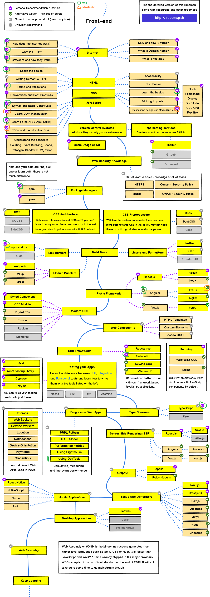

Intro
Riccardo
riccardo_bucchi@iprel.it
Full stack Developer
Riccardo
riccardo_bucchi@iprel.it
Full stack Developer
Source: developer-roadmap github
Source: più o meno come funziona
1. URL risolto
Il browser traduce l'indirizzo in una Request
Request URL: http://127.0.0.1:8080/
Request Method: GET
Status Code: 200 OK
Remote Address: 127.0.0.1:8080
2. Request mandata al server
Via Hypertext Transfer Protocl che è un protocollo livello 7, stateless.
Anatomia del protocollo è definita da RFC7231
Richiesta + Headers
Request URL: http://127.0.0.1:8080/
Request Method: GET
Status Code: 200 OK
Remote Address: 127.0.0.1:8080
Accept:
text/html,...
Accept-Encoding: gzip, deflate, br
Accept-Language: en-US,en;q=0.9,it;q=0.8
Cache-Control: no-cache
Connection: keep-alive
Host: 127.0.0.1:8080
...
3. Browser riceve la Response
La response è composta da contenuto + headers Response + Headers
<!doctype html\>
<html lang="en"\>
<head>
<title<Web dev</title>
</head>
<body>
...
<\body>
HTTP/1.1 200 OK
cache-control: max-age=3600
last-modified: Tue, 20 Apr 2021 11:05:19 GMT
content-length: 3340
content-type: text/html; charset=UTF-8
Date: Tue, 20 Apr 2021 12:03:54 GMT
Connection: keep-alive
...
4. Browser interpreta e renderizza
Di fatto qui c'è il nostro "Run Time" che è implementato all'interno del browser e ha vari componenti che "disegnano" componenti ed eseguono codice (tutto in fila!).
python3 -m http.serverhttp-server [path] [options]TODO: Navigare nel developer tool di chrome
TODO: Utilizzo CSS cosa comporta: esempio numbered headers e card di presentazione
TODO: Edit delle Request/Response: per vedere come debuggare cambiare l'invocazione dei metodi
TODO: Scegliere e argomentare:
protocollo HTTP, metodi/verbi, status code, Request&Response, storage (cookie, local, session), header, URI e querystring